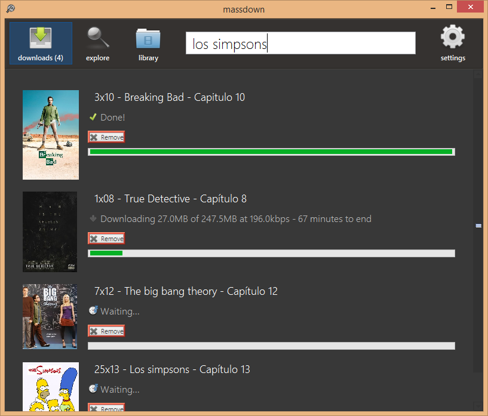
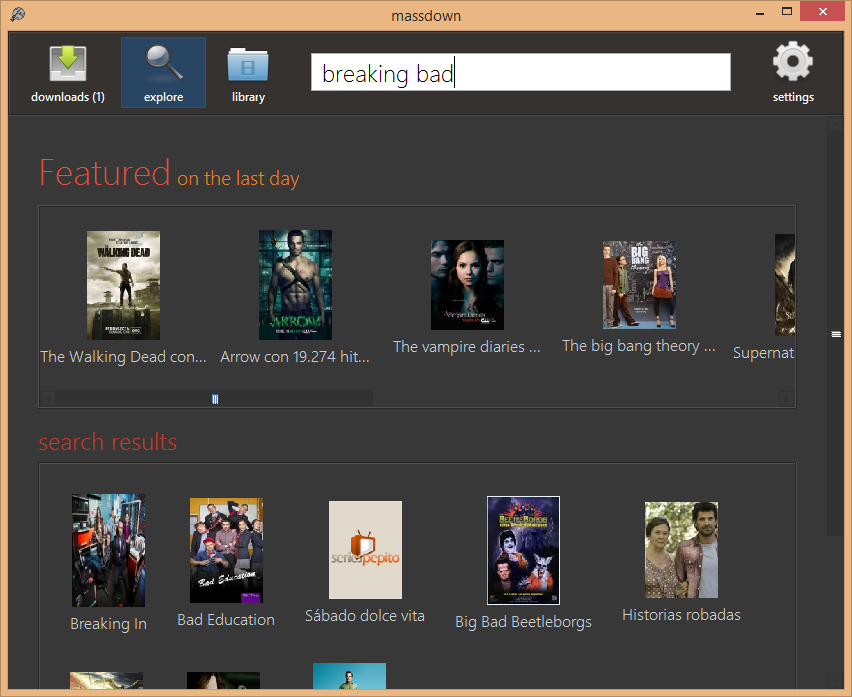
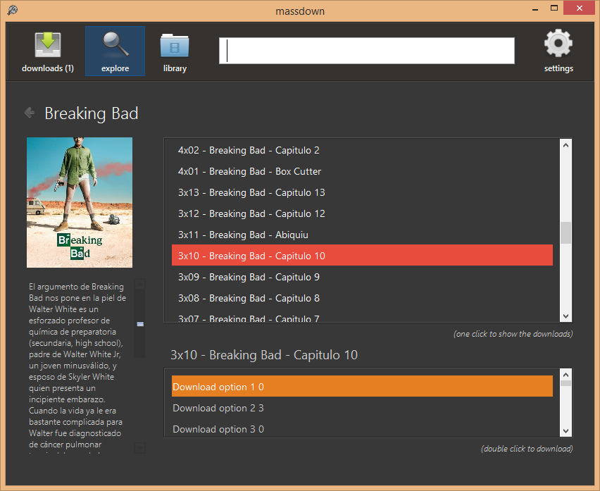
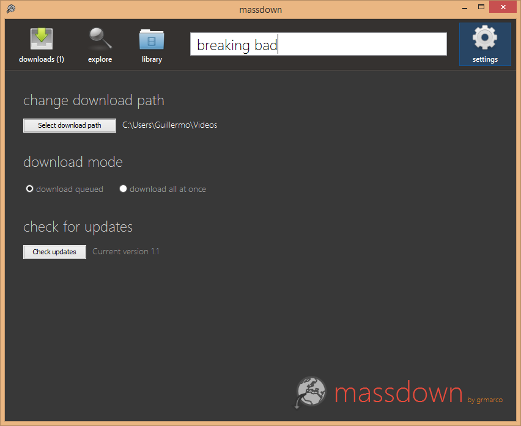

Massdown
Descarga series
Project maintained by grmarco
¡massdown 1.0 ha sido liberado!
Se ha reescrito por completo y añadido las siguientes nuevas características:
- Carga de series mejorada. De 1-2min que tardaba antes a milésimas de segundo.
- Nueva interfaz. En inglés, mucho más intuitiva y moderna.
- Ahora los episodios se pueden descargar en varios idiomas (español, inglés, inglés subtitulado).
- Compatibilidad con muchos más servidores.
- Gestor de descargas mejorado. Ahora se pueden parar las descargas, ponerlas en cola para aprovechar toda la banda ancha y se muestra mucha más información sobre estas (tiempo restante, tamaño descargado, total...).
- Código más legible y estandarizado.
- Muchas más pequeñas mejoras.
¿qué es massdown?

MassDown es un proyecto sin ánimo de lucro que tiene como objetivo hacer la descarga de series anónima, segura (sin riesgo a caer en fraudes) y más sencilla.
¿Cómo funciona?
MassDown, es términos básicos es un robot. El programa lo que hace es entrar en una conocida web de descargas, quita toda la públicidad y obtiene el enlace de descarga directa más seguro.
Por esta razón, es normal que aparezcan CAPTCHAS en el proceso de obtención de enlaces.
Requisitos
Galeria



Descarga
Windows | Linux | MacOSX
Autor
Este programa no tiene ningún fin lucrativo y los enlaces de las descargas utilizados pertenecen a terceros.